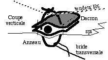

Depuis 2 ans, je faisais voler l'Oiseau Bleu de 3 m d'envergure et à grand allongement, mais je n'ai jamais voulu en publier les plans car il est trop difficile à régler : à chaque montage, il faut trouver la symétrie en agissant sur 3 ou 4 réglages qui interfèrent réciproquement. Je ne parle pas de l'humidité qui détend la toile et rebelote. Et s'il tire à droite par vent faible, il peut en même temps tirer à gauche par vent fort, jusqu'à partir en cercles, parce qu'il se déforme. Ceci dit, si la météo est stable, j'arrive souvent à le faire voler quelques heures, il ne faut pas tirer sur le pianiste. Et puis je l'aime bien pour son design et ses évolutions imprévisibles qui lui donnent une dynamique de vie.
Mais je voulais surtout faire un grand cerf-volant. C'est le péché mignon des cerfs-volistes : ils ont toujours envie que les autres admirent leurs cerfs-volants et il est notoire que les grands cerfs-volants attirent plus l'attention, voire l'admiration, que des petits, même plus beaux ou plus techniques, "Big is beautiful" for kites. Et c'est quand même jouissif en soi de faire voler un grand machin. Alors, j'ai utilisé la base et les enseignements tirés des modifications successives et laborieuses de mon oiseau bleu, et j'ai carrément doublé toutes les dimensions.
L'Albatros fait donc 6 m d'envergure, ce qui n'est pas rien, mais n'est pas encombrant une fois plié (le sac ne dépasse pas 120x10x7 cm, et c'est pas tassé). La structure des ailes est en effet constituée de 2 cannes à pêche télescopiques de 3 m. En fait, ce sont des cannes de 4 m dont il faut supprimer le dernier tronçon (le "scion") trop souple.
Elles se raccordent au centre via un petit tube alu Ø 5 à 7 mm de 8 cm de long, un peu coudé et enfoncé dans un trou fait dans chaque bouchon de pied de canne. Ce tube ne supporte évidemment pas le moment de flexion de la portance des ailes. C'est un autre tube transversal en carbone 10 de 120 cm de long qui reprend cet effort. Il est fixé de manière démontable au dessus des cannes par des élastics. Au centre, un tendeur en ficelle permet de régler le dièdre.
Le petit tube alu reste attaché au corps par un autre élastic (attention, là ça ne doit pas glisser, j'ai utilisé un anneau de chambre à air de moto bien serré). Ce corps est aussi un tube de carbone 10 mm. Il ne travaille pas beaucoup, j'ai même volé au début avec du 5,5 mm. Mais, malgré des diamètres que j'augmentais, j'ai cassé, jamais en vol, mais quand même 3 fois, juste au point où les cannes appuient : 2 fois en chutant sur le nez, et une sur un coup de vent arrière qui a replié les ailes pendant le montage. Donc utiliser un bon diamètre, le surpoids n'est pas très important ici. Il est sain aussi d'interposer entre le tube alu et le tube du corps un coussinet qui étalera le point de contrainte entre les 2 tubes ronds qui se croisent.
Pour la toile, 3 m de spi blanc suffisent en disposant judicieusement les 2 morceaux, qui ont une largeur limitée. J'ai fait les extrémités bleues, ainsi que la queue. La tête est noire. Que les zoologues puristes ne m'en tiennent pas rigueur, mon albatros à moi est un composite d'albatros, de mouette à tête noire, de goéland, et d'imagination.
Méthode pour dessiner la forme de l'aile : (inspirez-vous du plan, mais ne le suivez pas à la lettre car toutes les cannes à pêche ne sont pas pareilles)
1) donner à la canne sa forme future avec une ficelle Ox tendue d'un bout à l'autre.
2) en prenant la ficelle comme axe Ox, et en mesurant la perpendiculaire en différents points, reporter dans un logiciel de dessin ou sur un papier à l'échelle la forme de canne obtenue.
3) dessiner l'aile désirée sur le papier ou l'ordinateur, en prenant comme guide la forme de canne reportée. Respecter le plus possible les courbures et les angles de mon plan.
4) scotcher sur un calque (du papier kraft assez épais suffit) la canne réelle avec la ficelle toujours tendue.
5) reporter sur ce calque autour de la canne, à l'échelle 1, toujours à partir de la ficelle tendue comme axe des x, la forme dessinée en 3.
6) dessiner sur le calque les différentes pièces qui seront à découper puis à assembler pour composer l'ensemble. Noter le point où la canne tangente le bord d'attaque (ce sera le départ de l'ourlet où passera la canne, comme précisé plus bas).
7) découper le calque en ses différentes pièces pour report sur les toiles.
Les cannes à pêche passent dans un ourlet sur la partie externe de l'aile. Donc il suffit d'un ourlet fin au bord d'attaque pour la partie interne. Mais il faut ensuite vers le bout un ourlet rapporté de diamètre suffisant pour que la canne y passe facilement. Il sera taillé dans un biais pour lui permettre de suivre la courbe malgré sa largeur. Cet ourlet a une partie blanche et une partie bleue à assembler au moment de rapporter le total (voir plus bas la séquence).
Chaque aile comporte aussi 2 bandeurs à 45° environ en carbone 3 qui sont bloqués entre 2 fourreaux en Dacron, l'un au bord de fuite, l'autre au bord d'attaque (voir plan de bridage).
Voici le meilleur séquencement pour la couture de chaque aile :
Couper les parties bleues (prévoir marges pour l'ourlet à l'arrière et l'assemblage).
Couper les parties blanches (prévoir marges pour ourlet fin vers emplanture et à l'arrière).
Assembler Blanc et Bleu (noter que le raccord est, au bord d'attaque comme au bord de fuite, perpendiculaire à ces bords ce qui facilite l'assemblage et l'ourlet). Ourler l'arrière.
Mettre un renfort Dacron en bout d'aile selon le schéma ci-dessous.
Créer les biais blanc et bleu, de largeur décroissante, pour passage canne à pêche.
Mettre du Dacron dans le biais bleu au bout de l'aile. Ourler le bout BB' du biais blanc.
Coudre le biais blanc en PMB le long de l'ourlet avant sur 10 cm.
Replier A'B' sur AB et monter tout le biais blanc sauf sur une quinzaine de cm.
Assembler seulement alors le biais bleu au blanc au droit du raccord blanc/bleu de l'aile (il est difficile de mesurer avant, compte tenu de l'étirement du biais à la pose).
Coudre le biais bleu jusqu'au bout de l'aile. Couper le tissu et le Dacron en trop.
Coudre les 2 fourreaux de chaque bandeur (dacron plié en deux en long).
Assembler les 2 ailes ensemble (le corps vient après, ne vous croyez pas sorti !).
Corps :
Les mesures indiquées permettent de proche en proche de tout dessiner et découper.
Quelques bons conseils :
- Réalisez d'abord en papier en petite taille pour bien comprendre la géométrie 3D.
- Assemblez tant que c'est plan (avant donc de faire les coutures en ABCDE), les parties de couleurs différentes, par exemple selon les lignes MM' et NN' si vous faites la même déco que moi, (ou même les morceaux de spi blanc pas forcément d'un seul tenant : utilisez les chutes).
- Ourler A'B'C'D'E' et A"B"C"D"E" symétrique (pas AA' ni EE'). Coudre ABCDE. Ourler A"AA' à la tête et E"EE' à la queue et y glisser des raidisseurs sur lesquels le tube central sera attaché (prévoir cela en A et E dans l'ourlet). Mes raidisseurs sont coupés dans les petites lames en inox qu'on trouve dans les balais d'essuie-glace usagés (ou dans les neufs mais c'est du gaspillage!). Elles se plient à l'angle voulu, mais sont bien élastiques, assez rigides, incassables et... inoxydables.
- Coudre C'D' sous l'aile droite à 16 et 12 cm de l'axe, et C"D" symétriquement à gauche.
Voilà ce que cela doit donner, vu en perspective :
La bride avant sera attachée à un jonc 2 mm NB mis dans le corps pour tendre celui-ci, mais aussi au tube central pour plus de résistance. La bride arrière tire peu (car l'albatros cabre), l'attacher seulement à un jonc 2 mm CQ intérieur au corps, elle lui donnera son volume.
Le gréement :
L'albatros comporte un gréement propre nécessaire pour lui donner sa forme et lui permettre de la conserver malgré le vent. Il faut en particulier permettre aux ailes de garder de l'incidence et de prendre une forme qui donne de la stabilité en tangage (qui fait cabrer) et en lacet (qui maintient le nez dans l'axe du vent). Pour cela, un wisker (10 cm) est monté verticalement au dessus de chaque bandeur externe. Ceci le courbe et donne la forme voulue au bout d'aile.
W1 est le wisker vertical. B1 et B2 sont les bandeurs, en carbone 3. Des tendeurs R1,2,3,4 partent du haut de W1 et vont : aux deux bouts du bandeur B1, au bout de l'aile, et à la queue (en passant au bout de B2). Un tendeur R6 est attaché (et collé à la cyano) autour du bout du gros segment de canne à pêche, passe dans un anneau à l'avant de B2, de son symétrique, et rejoint l'autre canne. Mes tendeurs sont faits dans une vieille ligne 45 kg, largement dimensionnée, mais il faut quand même tendre pas mal, et surtout les noeuds de réglage sont plus faciles à faire (ou à défaire, sait-on jamais...) et moins glissants si le diamètre est suffisant. Rappel : voici la meilleure méthode que j'aie trouvée pour les tendeurs réglables :
Réglage initial du gréement :
Bien tendre le tissu transversalement et bien symétriquement au niveau des bouts d'ailes (voir "Détails du bout d'aile"). Il faut aussi que les bandeurs B1 et B2 tendent bien le tissu sous eux. On aura intérêt à les couper seulement au moment de les monter à la bonne longueur. La toile des ailes ne doit montrer aucune zone détendue, en particulier entre le bout d'aile et l'endroit où la canne entre dans l'ourlet.
Tendre suffisamment R1, R2, R3, R4 pour que le wisker W1 (en Carbone 3 mm) soit vertical, et B1 nettement courbé. R1/R2 doit être tendu jusqu'au point où le bord de fuite commence à mollir, mais pas plus.
Tendre R6 pour que B2 soit bien appliqué sous la canne, et même plutôt courbé vers le haut.
Réglage sur le terrain (ce sera surtout la symétrie qui pourra poser problème) :
Vérifier à chaque montage que les 2 ailes ont bien la même longueur au cm près (la couture centrale doit coïncider avec le tube). Sinon corriger en tirant bien sur les cannes et en tendant plus ou moins les ficelles de bout d'aile voire en rajoutant des segments de durit sur les tubes carbone en bout d'aile.
Si l'albatros tire par exemple vers votre droite, vérifier d'abord le point précédent. Si cela ne suffit pas, diminuer la traînée à droite en inclinant W1 de droite, jusqu'à l'horizontale si besoin, en avançant son pied seulement (c'est le réglage le plus influent).
Si l'albatros ne cabre pas assez et a tendance à être mou voire à planer vers l'avant en haut de fenêtre : tendre plus R3 et R4 pour courber plus B1.
Bride "normale" : C'est une bride à 4 points. J'ai longtemps volé (à Dieppe, par exemple) avec une bride 2 points seulement. Mais la bride transversale stabilise bien et évite de devoir trop pinailler la symétrie. Elle est surtout efficace parce que l'albatros doit voler assez à plat (n'ayez pas peur, il cabre tout seul s'il est bien réglé, et donc ne passe pas au dessus de la fenêtre). La bride longi est attachée au bec et au milieu du corps comme expliqué dans "CORPS".

La bride transversale est prise aux anneaux à l'avant des B2. Mes anneaux sont en fait juste des petites boucles de ligne 45 kg qui transpercent le Dacron des fourreaux des bandeurs en entourant ces derniers. Idem à chaque bout de chaque bandeur pour les Rx.
La bride transversale agit géométriquement, mais aussi aérodynamiquement en abaissant l'avant d'une aile qui tirerait sur elle, ce qui diminue sa traînée et ramène l'aile en avant. Tendre à peine cette bride au repos.
Montage : Pour le montage, mettre la toile à plat, le dos vers le haut. Etendre partiellement les cannes et bloquer seulement les 2 tronçons les plus fins ensemble. Introduire ces extrémités dans les ourlets et monter les bouts d'ailes. A l'opposé, enfiler le gros bout de la canne sur le tube alu central. Attention au vent qui attend sournoisement ce moment pour soulever les ailes et les plier l'une sur l'autre, ce qui est désastreux ! Monter le tube transversal de dièdre. Ensuite seulement, finir d'étirer les cannes et les bloquer. Ne pas avoir peur de tirer en tournant pour bien bloquer les segments de canne : la courbure imposée à la canne gêne cette action, mais si le coincement n'est pas suffisant, ça se décoincera en vol et j'espère que vous avez des copains qui sauront monter aux arbres. Faites auparavant une marque sur la canne pour savoir si vous avez bien tiré suffisamment. Mettez un scotch autour pour vous rassurer éventuellement : "si ça tourne pas, ça se décoince pas".
Pour démonter, faites l'inverse, mettez les cannes parallèles au corps et enroulez la toile autour. Ca fait quelques plis à cause du gréement (pas besoin de démonter celui-ci), mais ils se déferont quand vous tendrez la toile.
Conclusion :
Je trouve que c'est un magnifique cerf-volant mais il faut le mériter, il est assez complexe et tout est important. Ceci dit, il est bien stable sauf par des vents très forts (force 5 ?) [NdR : voir PS] qui le déforment trop. Mais je n'aurais jamais pu le concevoir et le réaliser sans mes recherches ingrates et difficultueuses sur l'oiseau bleu évoqué au début. J'essaye de faire profiter ce dernier à son tour des innovations de l'Albatros, par reconnaissance...
L'Albatros n'est pas très coûteux à réaliser et si vous ne disposez pas d'un hangar d'aviation, n'ayez crainte, vous pouvez sans problème le fabriquer dans votre salle à manger : la corde des ailes étant limitée, ça passe en machine à coudre comme une tôle au laminoir. Il ne faut pas non plus un nombre d'heures avec 2 ou 3 zéros, si vous ne vous compliquez pas la vie avec des doubles ourlets retournés au point d'alvéole (page 19 de la notice Singer).
Si vous voulez plus d'explications, ou si vous rencontrez un problème non traité, contactez-moi (d'accord, je n'ai pas tout expliqué, en particulier les "pourquoi", mais si vous ne voulez pas modifier le modèle, je crois que ce que j'ai dit suffit). Bon courage, bon vent, et à bientôt sur les terrains.
MAXIME
PS au 1/1/2004, modifié au 21/07/04 :
1) Cet article a été écrit en 1997/98 pour le LUCANE, la revue du Cerf-Volant Club de France. Il est aussi paru dans la revue du NCB (Nouveau Cervoliste Belge).
2) Limite de vent : J'ai volé jusqu'à Force 8 sans casser. Il vaut mieux s'arrêter là, au dessus les coutures vont déchirer la toile.
3) Modifications apportées depuis la rédaction de l'article :
- Tête et queue : j'ai repris pour le corps la fixation classique avec une ficelle cousue sur la toile et le renfort dacron, complétée par un bandeur rigide transversal. Les lamelles initiales se déformaient trop par vent fort et sortaient de la toile.
- J'ai renforcé les bords d'attaque avec du dacron, sinon les chocs sur les ficelles des copains, ou le frottement sur le sable crèvent les ourlets, très tendus, et on finit de les déchirer (d'autant qu'ils sont courbes) quand on enfile les cannes dedans.
- La bride arrière part maintenant de la queue. J'ai monté une bride arrière élastique avec un élastique de 3 mm, longueur 40 cm, et ajouté un plomb (une noix) à l'arrière, tout ça pour éviter le plané vers l'avant quand la ligne est longue et que le vent s'arrête.
- Corps : Il n'est plus tenu en volume par la bride arrière, alors j'ai mis un bandeur vertical qui lui garde sa forme (même au sol, ça fait plus joli..). C'est une fibre de verre de 2 qui prend appui entre la quille et le tube de corps. J'ai aussi, et je ne suis pas le seul, rallongé le jonc de quille jusqu'à la queue où il est enfoncé en butée dans une durit sur le tube de corps. Il est courbé par le bandeur vertical. Il faut arrondir la découpe du tissu du corps au lieu de faire des angles en C et D.
- J'ai rajouté un tendeur qui courbe le bandeur interne (B2 sur le plan du gréement). Sa longueur est : juste tendu parallèle à B2. Quand on passe la canne dessous, B2 se courbe donc un peu.
- Les tendeurs qui courbent les bandeurs B1 et B2 (carb 3) des ailes ne tirent plus sur le tissu ou le fourreau dacron, mais sur une butée (isolant de fil électrique 2,5 par exemple) enfilée et collée sur le jonc. Sinon, le jonc finit par traverser le tissu, le dacron, etc, surtout s'il pleut et qu'il vente.
4) Pour vous rassurer sur la faisabilité de l'Albatros, à part les miens, 14 ont déjà été construits selon mes plans (ou à peu près...), par Charles Soulard, Michel Gressier (2), Jacques (de Vierzon), les Mouchague (mais en noir !), Jean-Marc Bardon (1) et Bernard mais qui l'a cassé et apparemment ne le répare pas. (voir 4 Albatros en vol à Fetes et Reportage/Dieppe). Eric Stempell en a fait 3 avec ses copains. Deux ont aussi été réalisés indépendamment par des Espagnols en Espagne. Enfin 2 viennent d'être construits par des cervolistes de Manneville-La-Goupil, au sud de Fécamp.
Suite des évolutions (2005) : avant de refaire complètement l'Albatros, j'ai essayé quelques variations :
- J'ai fermé le bout des ailes et les petits tubes ajoutés à la canne restent fixés à celle-ci (mais on peut toujours les démonter pour varier le réglage de tension ou l'équilibre, suite à une casse). Le montage (coulissement) est plus facile et endommage moins l'ourlet avec l'embout, et on n'a plus à tâtonner pour enfiler le petit tube (qui ressortait d'ailleurs parfois quand on montait l'autre aile !).
- J'ai reculé le point de bride avant, sinon le corps se courbait trop vers le haut par fort vent, et cela améliore également dans le même sens que la bride élastique par vent nul. J'ai essayé aussi de donner un peu de volume à la tête vue de profil, mais avec peu d'efficacité. Ce point reste à améliorer.
- J'ai abandonné le passage des tendeurs arrières à l'arrière des bandeurs internes. Après essais, l'apport était très faible, voire négatif : le passage diminuait un peu l'incidence de l'aile, ce qui facilitait les déventes.
A suivre : plutôt que de refaire la toile de l'Albatros (d'abord ça me faisait mal de destroyer ce fier animal qui m'accompagne fidèlement et fiablement depuis des années; ensuite il aurait fallu aussi changer plusieurs parties usées du gréement), j'ai décidé de refaire un Albatros Nouveau. Evidemment, je n'ai pas pu m'empêcher de le modifier un peu, tête, plan de l'aile, corps... et ça a été long, mais il est sorti, voir Albatros 2 .